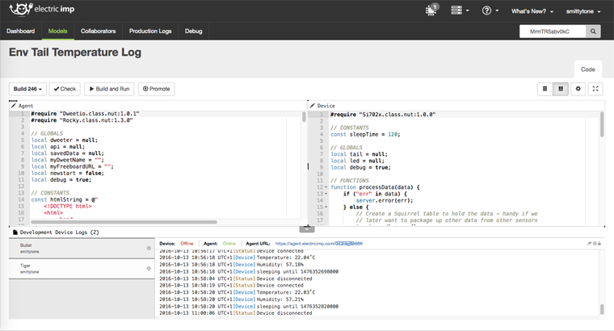
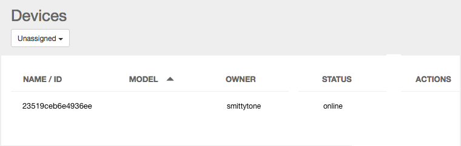
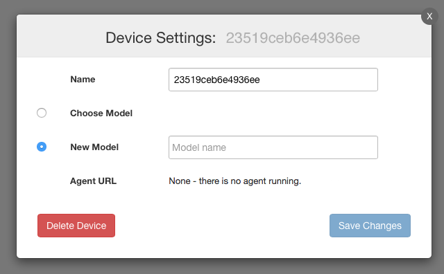
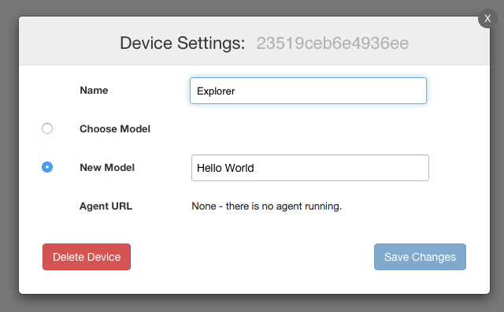
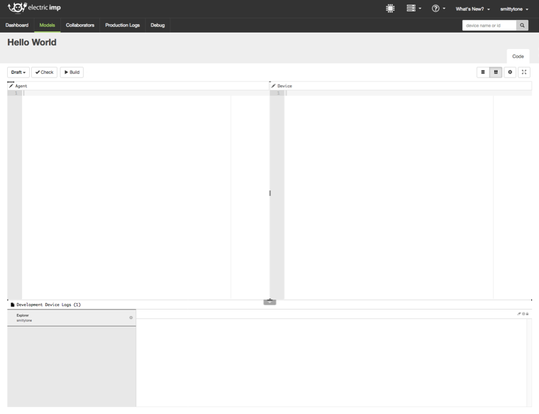

Electric Imp IDE（統合開発環境）では、imp 対応製品を制御するソフトウェアをデプロイ（配置）するのに必要となる全てのツールを提供しています。 その次のセクションでカバーする impExplorer 向けプログラミングを開始する前の準備段階として、このセクションでは IDE の主要機能についてクイックに見ていきます。
IDE はデスクトップの Web ブラウザで動作します。Firefox と Google Chrome に最適化されていますが、 Safari や Edge などのLinux, Mac OS X や Windows 向けの主要ブラウザでも動作します。Internet Explorer 11 以前のバージョンはサポートしていません。
もし IDE にサインインしていない場合、ide.electricimp.com から前の項で作成したアカウントを使ってログインしてください。
IDE は下記３つのエリアで構成されています。

では、実際にIDE を使って impExplorer 向けプログラムをコーディングしていきましょう。
新しく設定した impExplorer は、前のセクションで実行した BlinkUp 操作によって、あなたのアカウントに紐付けられています。トップバーエリア右側の最初のアイコン () をクリックします。このボタンは 『デバイス』を示し、開発デバイスの一覧を表示します。お持ちの impExplorer はまず ‘Unassigned’ （未アサイン）として表示され、単純にどのアプリケーション ー Electric Imp の用語では 『モデル』といいます ー にも関連付けられていないことを意味しています。今まずあなたがすることは『デバイス』列にあるお持ちの impExplorer に固有のデバイス ID を確認することです。

impExplore Kitで動かすモデルの作成に取りかかる前に、Electric Imp の基本的な用語についてお伝えする必要があります。それは、デバイスと imp がそれぞれ何を表すのかということです。
imp はあなたのコネクテッド・デバイスにインターネット接続と、コンピュータ・インテリジェンスを提供するための部品（コンポーネント）を表します。これは（米国版）impExplorer Kit では imp001 カードを指し、はんだ付けモジュールでは imp003, imp005を指します。（訳注：日本版 impExplorer Kit の場合、はんだ付けモジュールの imp004m が 'imp’ です。）デバイスは imp と imp 以外のハードウェア・コンポーネントの組み合わせを指します。（米国版）impExplorer Kit の場合、デバイスは imp001 カードとホスト基板、センサーやディスプレイ、ボタンやスイッチなど、あなたが追加した他のハードウェアとの組み合わせを指します。（訳注：日本版 impExplorer Kitの場合、imp004m モジュール、基板、各種センサー類をまとめた概念が デバイスとなります。）
imp はデバイスの1つのパーツに過ぎないので、 IDE に表示されるのはデバイスであって imp ではありません。もし２つのimpExplorer Kit があり、その両方が IDE にリスト表示され、異なるモデルが動作しているとします。あなたはいつでもそれぞれのデバイスの imp001 カードを交換して使うことができますが、デバイスとしては変わらず動作します。個々の imp001 カードはそのデバイスを適切に動作させるために必要なソフトウェアを自動的に取得します。imp は常に挿した先のデバイスの振る舞いを「承継」するので、IDE は imp ではなくデバイスにフォーカスしているのです。（訳注：日本版 impExplorer Kit の場合 imp004m がはんだ付けされており、imp とデバイスの違いを意識する必要はありません。imp を含むデバイスがIDE 上で管理されることを理解しておけばOKです。）
お手元の impExplorer は ‘Unassigned Devices’ に表示されているかと思います。これは、どのソフトウェアを実行するか指示されていないためです。初期設定ではどのモデルも割り当てられていないので、新しいモデルを作成する必要があります。モデルは Electric Imp のアプリケーションのことで、その半分は次のセクションで記述するデバイスで動作するコード、そしてもう半分は（その先で記述する）クラウドで動作するコードのことをいいます。
マウスポインターを impExplorer のある行の ‘Actions' 列まで動かすと、歯車のアイコンが見えると思います。ここをクリックして ‘Device Settings’ パネルを開いてください。

‘Device Settings’ は、名前をつけたデバイスに既存のモデルを割り当てるか、新しいモデルをただちに作成することができます。 お手元の impExplorer には、 ‘New Model’ ラジオボタンを選択したことを確かめ、そのボタンの次のフィールドに“Hello World” と入力してください（初期値として Model name が設定されています）。まだここでは ‘Save Changes’ は押さないでください。
お手元の impExplorer の名前は分かりにくくて親しみにくいので、変更しましょう。 impExplorer に最初に付けられる名前は固有の ID コードで、IDE 上で表示される名前を変更したとしても保持されています。‘Name’ フィールドをクリックし “Explorer” と入力します。その後 ‘Save Changes’ をクリックしてください。

“Hello World” のモデルに対するコード表示画面がワークスペースに表示されます。モデル名のそばに3つのボタンが見えます。以前のバージョンのモデルを 1つ目の矢印から選択できます。ここではまず最初のモデルとして表示されており、まだimpCloud に保存していないため “Draft” と書かれています。2つ目のボタンは ‘Check’ で、コードの文法を速やかにチェックできます。3つ目のボタンは ‘Build’ で、入力されたコードをクラウドに保存します。

ボタン群の下には ‘Agent’ と ‘Device’ と書かれたコード画面があります。一番下には、このモデルに割り当てられたデバイスの一覧があります。デバイスを選択すると、その右側のパネルにログメッセージが表示されます。どのように動作するか見てみましょう。最初にデバイスリストから “Explorer” を選択してください。デバイスコード画面に移り、以下をタイプしてください。
server.log("Hello from the impExplorer");impExplorer に電源が入っていて、インターネットに接続していれば、エージェントコード画面の上にある‘Build and Run’ ボタンを探してください。ここは前に ‘Build’ となっていたボタンですが、デバイスを選択することで変わったはずです。‘Build and Run’をクリックしましょう。デバイスには何も起こりませんが、IDE ログには下記のように表示されるはずです。
[Device] Hello from the impExplorerこれで実際のソフトウェアを実行する準備が整いました — 次のセクションで続きを行います。
ここまでの説明で、当座はじめるための IDE の機能をざっとご覧いただきました。IDE のすべての機能をより深いレベルで見たい方には、IDE User Guideを用意しています。ページはこちら（英文）です。
次のセクション に進むか 最初のセクションに戻る